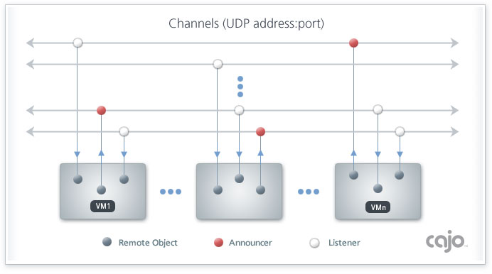

|
|
|
|
Connecting to cajo objects independently of the server's host address
|
|
|
|
The Multicast class performs
two complimentary functions. First, it allows an object to "broadcast"
a remote reference to itself over the network. Second, it allows an object to
listen for, and catch, these reference broadcasts. Once caught, an
object can invoke the public methods of the broadcasting object. These two
functions operate entirely independently of each other; i.e. an object can
broadcast without listening, and listen without broadcasting, it can even
do both. If it is listening when it broadcasts, a VM will even catch its
own reference.
|
|
The use of multicasting is completely application specific; for example, it
can be used to join a group of inter-operating objects, or it can be used to
announce a particular event. Essentially, it gives objects an opportunity to
connect to each other spontaneously, without having to know the host address'
of the listening or sending items beforehand. This is particularly useful in
DHCP environments, where each machine's host address can be randomly assigned
and reassigned.
There are two parameters on which the objects must agree in order to send
and receive references between each other. An IP address, and port number,
define a specific "channel", to use a radio analogy. Changing either
of these values effectively switches to an entirely different channel. This
UDP/IP address/port pair is fundamentally different from a TCP/IP address in
that it doesn't identify a specific machine and socket, rather it
represents all machines that are a members of a "group".
A object can listen and broadcast on as many channels as it wants.
Applications can range from performing all multicasts on a single channel,
to using separate channels for each specific meaning. A server performs a
broadcast by passing a reference to any object to a multicast object's
announce method.
The framework defines a default channel, which can be useful for spontaneous
inter-networking. To use a Star Trek metaphor; it could be
likened to the 'hailing frequency', for contacting new and unknown
objects. Extracting interface information from spontaneously discovered
objects is currently application specific, unless there is strong community
interest for its standardization. The official suggestion would be
for objects to implement a String getDescription() method, which
would return a description of the features and use of the object in detail,
with HTML markup allowed. (one suggested template can be found
here) Ideally, objects should also implement the getProxy()
method, to provide a local interface, which would in turn provide a graphical
user interface to the object, as described in the proxy
tutorial, and demonstrated in the example. When an
object announces its reference on the hailing frequency, the suggestion
would be for remote VMs to invoke a method called contact on the
received reference, passing a string of the URL, typically in the form
//host[:port]/[name], on which its main object can be statically contacted,
as the sole argument.
|
An object can register itself with a multicast object to listen for these
reference broadcasts. It does this by invoking the multicast's
listen method, passing in a reference to itself. When the multicast
object receives a broadcast of a remote object reference, it will invoke the
listener's public multicast method, passing a reference to itself, as
an argument. Logically, a listening object must implement the following
method:
public Object multicast(Multicast m);
A multicast object has four public members, which can be accessed by the
listening object:
| item |
The remote reference to the broadcasted object. |
| iaddr |
The TCP address of the broadcasting server. |
| address |
The UDP address on which this reference was received. |
| port |
The UDP port on which this reference was received. |
The reason for calling a listener with a reference to the multicast
object is to allow for the possibility of a single object to listen with
multiple multicast objects. If the listener is listening with only one
Multicast object, there is no chance of its multicast method being invoked
reentrantly. However, if it is listening on more than one, the possibility
exists for reentrant invocation.
A multicast object checks the return value of its listener's
multicast method invocation. If it returns null, it will continue
listening; if the listener returns a non-null value, it will stop
listening. To start the object listening again, its listen method must
be called, with either the same, or a different listener.
|
Graphically, the multicast concept looks something like this:

Just as an orthodox item would support both the getDescription
and getProxy methods; an orthodox server would also be
listening on the hailing frequency, and giving its primary contact URL to
announcing items.
The multicast mechanism creates the possibility for objects to spontaneously,
and dynamically connect. This allows objects to join confederations of
objects to accomplish larger tasks. Dynamic confederation can provide
resilient, adaptive, and fault-tolerant application networks, exhibiting
small-world and
scale-free network properties. When operating in the context of a group
of developers; it can enable a whole range of
emergent applications to form. This is an extremely exciting new
frontier!
|
|
Multicasting allows objects to join other object collectives, dynamically!
|
|